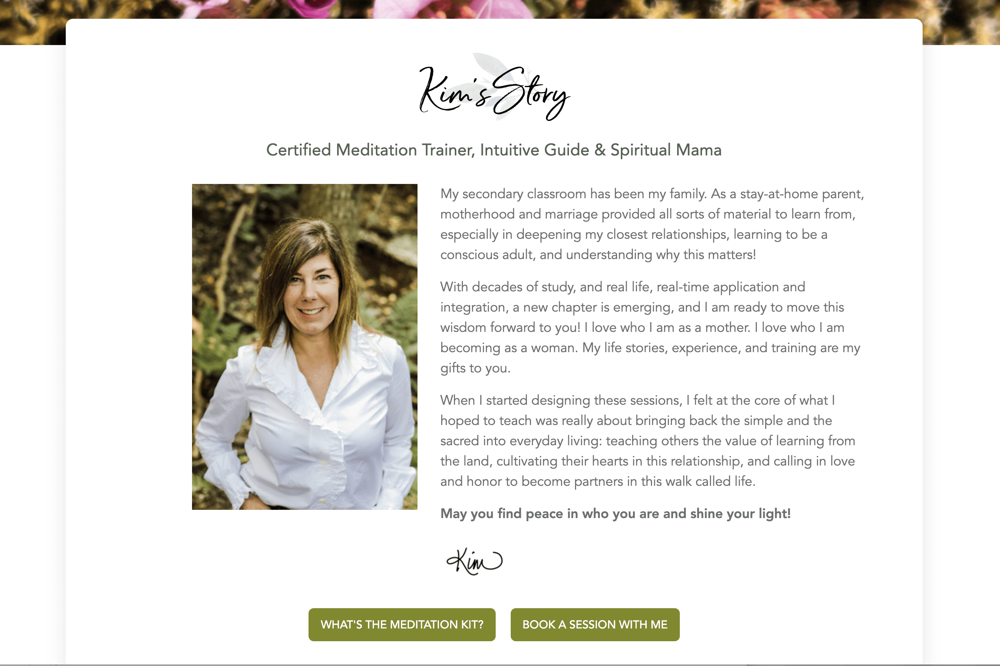

<div id="ajax-page" class="ajax-page-content">
    <div class="ajax-page-wrapper">
        <div class="ajax-page-nav">
            <div class="nav-item ajax-page-prev-next">
                <a class="ajax-page-load" href="elevate-healing.html"><i class="lnr lnr-chevron-left"></i></a>
                <a class="ajax-page-load" href="know-ron.html"><i class="lnr lnr-chevron-right"></i></a>
            </div>
            <div class="nav-item ajax-page-close-button">
                <a id="ajax-page-close-button" href="#"><i class="lnr lnr-cross"></i></a>
            </div>
        </div>

        <div class="ajax-page-title">
            <h1>Everyday Sacredness</h1>
        </div>

        <div class="row">
            <div class="col-sm-7 col-md-7 portfolio-block">
                
                <div class="portfolio-page-image">
                    
                </div>
                
                <script type="text/javascript">
                    jQuery(document).ready(function($){

                        $('.portfolio-page-carousel').owlCarousel({
                            smartSpeed:1200,
                            items: 1,
                            loop: true,
                            dots: true,
                            nav: true,
                            navText: false,
                            margin: 10
                        });

                    });
                </script>
            </div>

            <div class="col-sm-5 col-md-5 portfolio-block">
                <!-- Project Description -->
                <div class="project-description">
                    <div class="block-title">
                        <h3>Project Details</h3>
                    </div>
                    <ul class="project-general-info">
                        <li><p><i class="fas fa-laptop-code"></i> <a href="https://everydaysacredness.com/" target="_blank">everydaysacredness.com</a></p></li>
                    </ul>
                    
                    <p class="text-justify">Kim Miller is a Certified Meditation Trainer, Intuitive Guide & Spiritual Mama. Polypore Design designed and developed a custom WordPress theme integrated with Acuity Scheduling. Kim's clients are able to schedule and pay for services while remaining on her website. The client is able to easily modify website content using the WordPress content management system (CMS).</p>

                    <!-- /Project Description -->

                    <!-- Services -->
                    <div class="tags-block">
                        <div class="block-title">
                            <h3>Services</h3>
                        </div>
                        <ul class="tags">
                            <li>CUSTOM WORDPRESS THEME DEVELOPMENT</li>
                            <li>RESPONSIVE WEB DESIGN</li>
                            <li>ACUITY SCHEDULING INTEGRATION</li>
                        </ul>
                    </div>
                    <!-- /Services -->
                </div>
                <!-- Project Description -->
            </div>
        </div>
    </div>
</div>
